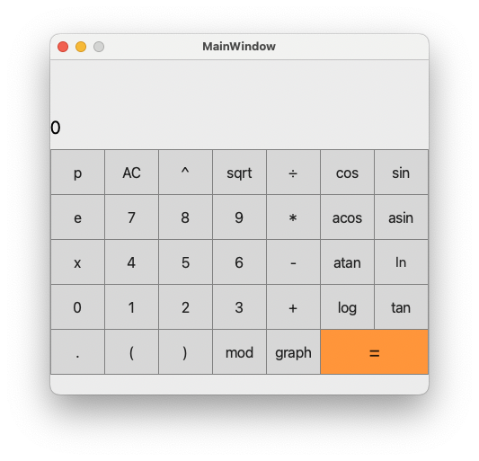
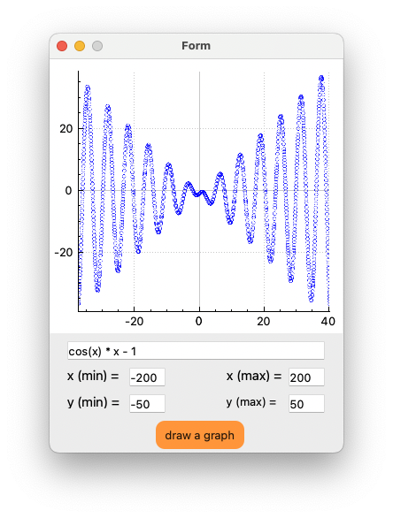
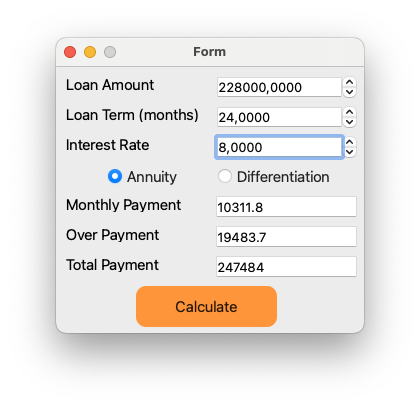
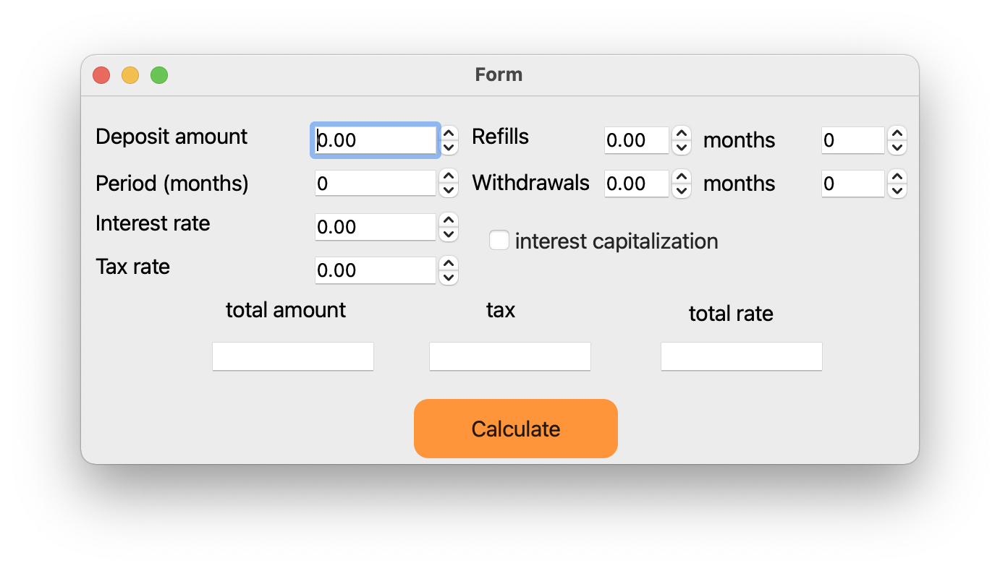

Main Calculator
Smart calculator - divided into three blocks. This calculator - calculates arithmetic and binary operations with numbers, graph builder - builds a graph according to a given expression, credit calculator - has two types of credit: annuity, differentiated.

HOW TO USE:
All buttons of the screen are active.The calculation of the expression you entered is done by pressing the "=" button.When you enter x and press =, a dialog box will appear and ask you to drive the number to replace x.
| Operations |
| Operator name |
Operator |
Description |
Example |
| bracket |
( ) |
takes the expression in brackets |
x - (y * z) |
| plus |
+ |
addition of two operands |
x + y |
| minus |
- |
the difference of two operands |
x - y |
| multiplication |
* |
product of two operands |
x * y |
| division |
/ |
division of two operands |
x / y |
| exponentiation |
^ |
exponentiation |
x ^ y |
| remainder of division |
mod |
remainder of division |
x mod y |
| unary minus |
- |
unary minus |
-x |
| unary plus |
+ |
unaru plus |
+a |
| Functions |
| Function |
Description function |
| cos(x) |
Computes cosine |
| sin(x) |
Computes sine |
| tan(x) |
Computes tangent |
| acos(x) |
Computes arc cosine |
| asin(x) |
Computes arc sine |
| atan(x) |
Computes arc tangent |
| sqrt(x) |
Computes square root |
| ln(x) |
Computes natural logarithm |
| log(x) |
Computes common logarithm |
Graph builder
Graph builders - plots the graph according to the output expression. The range is from - 1,000,000 to 1,000,000 inclusive.

HOW TO USE:
Entering x(min) and x(max) will set the range of the graph on the x-axis, entering X will set a point on the X-axis, entering Y will set a point on the Y-axis.Clicking on custom will clear your fields, clicking on example will set an example for a quick test of the Graph Builder utility
Credit Calculator
Loan Calculator - calculates your loan. It has two types of credit: annuity, differentiated.

HOW TO USE:
At the entrance there are three parameters: the loan amount, term for which the loan is taken (in months), the interest rate, in accordance with these parameters and depending on the type of credit you selected, your repayment plan will be calculated.
Deposit Calculator
deposit calculator - suitable for calculating deposits for a certain period, the functionality allows you to add and subtract from the principal amount, there is interest capitalization.

HOW TO USE:
Enter all the input data and click the calculate button.